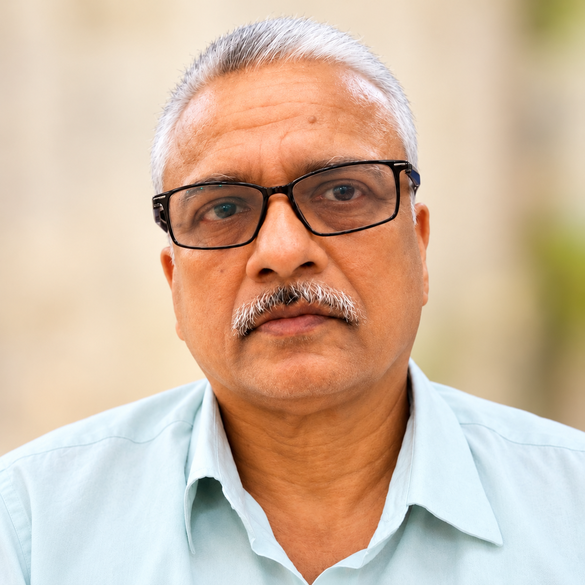
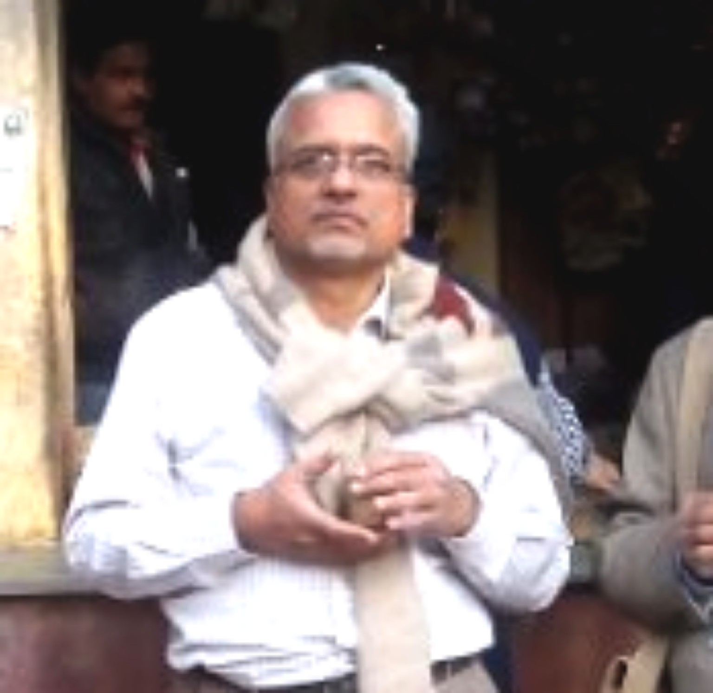

जीवन-यात्रा, अनुभवों, रुचियों, परियोजनाओं और विचारों से जुड़े चुनिंदा चित्रों एवं वीडियो का संग्रह।
इस पृष्ठ के बारे में: यह एक विकसित होता दृश्य अभिलेख है। यहाँ दिखाए गए चित्र और वीडियो प्रारंभिक परीक्षण के लिए रखे गए हैं; समीक्षा के बाद संग्रह को और व्यवस्थित किया जाएगा।
मेरी यात्रा एवं व्यक्तिगत पड़ाव
जीवन, सीखने और अनुभव के विभिन्न चरणों से जुड़े चुनिंदा चित्र और चिंतन।

व्यक्तिगत यात्राएक चयनित व्यक्तिगत चित्र

पहले के वर्षजीवन-यात्रा के पहले के चरण का एक चित्र
परियोजनाएँ, शिक्षा एवं पहल
सम्यक शिक्षा, मानव क्षमता, सततता, शोध और सहयोगी पहलों से संबंधित दृश्य सामग्री।
सम्यक शिक्षाचयन के बाद शिक्षा एवं कार्यशाला के अतिरिक्त चित्र जोड़े जाएँगे
परियोजनाएँ एवं कार्यचयन के बाद परियोजना संबंधी चित्र जोड़े जाएँगे
शोध एवं संवादकार्यक्रमों और चर्चाओं के चित्र बाद में जोड़े जाएँगे
वीडियो एवं प्रस्तुतियाँ
सम्यक शिक्षा, मानव क्षमता और सीखने की निरंतर यात्रा से जुड़े चुनिंदा वीडियो। भविष्य में दो और वीडियो जोड़ने के लिए स्थान सुरक्षित रखे गए हैं।
Right Education — In Search of the True Beginningप्रस्तुति वीडियो · लगभग 8 मिनट 24 सेकंड
▶वीडियो 2भविष्य की प्रस्तुति या संवाद के लिए सुरक्षित स्थान
शीघ्र उपलब्ध होगाचयन के बाद वीडियो जोड़ा जाएगा
▶वीडियो 3भविष्य की प्रस्तुति या संवाद के लिए सुरक्षित स्थान
शीघ्र उपलब्ध होगाचयन के बाद वीडियो जोड़ा जाएगा
यह प्रारंभिक मीडिया चयन है। चित्रों के साथ विवरण और वैकल्पिक पाठ दिए गए हैं; अतिरिक्त चित्र समीक्षा के बाद चुने हुए रूप में जोड़े जाएँगे।
चित्रों के पीछे के विचारों को जानें
सम्यक शिक्षा, शोध और अब तक की यात्रा के बारे में पढ़ें।